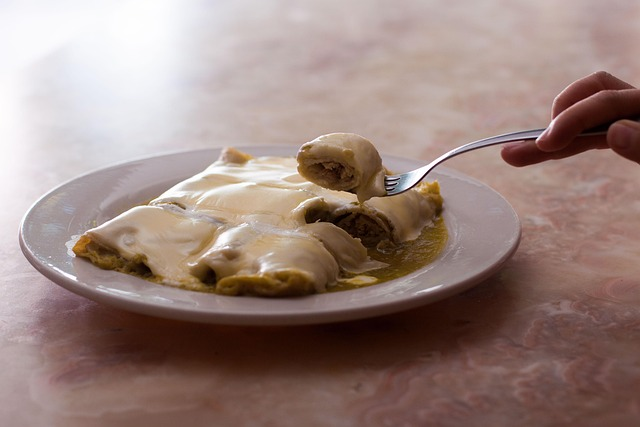

Enchilada Mexicana

Description
Enchilada Mexicana is a comforting and hearty dish made of corn tortillas rolled around a savory filling,
then smothered with a rich red chili sauce and baked until bubbling. Common fillings include shredded
chicken, beef, cheese, or beans, making it versatile for any palate.
The star of this recipe is the homemade enchilada sauce, which is infused with smoky chili peppers,
garlic, and spices for an authentic flavor. Served hot with a side of rice and beans, enchiladas are a staple
in Mexican cuisine and a satisfying main course for family dinners.
Ingredients
- 12 corn tortillas
- 2 cups cooked shredded chicken or beef
- 2 cups shredded cheese (cheddar, Monterey Jack, or queso Oaxaca)
- 1 small onion, finely chopped
- 2 cups enchilada sauce (homemade or store-bought)
- ½ cup sour cream (optional for topping)
- Fresh cilantro for garnish
- 2 tbsp vegetable oil
For the enchilada sauce:
- 3 dried guajillo chilies, seeded
- 2 garlic cloves
- 1 cup chicken broth
- 1 tsp cumin powde
- 1 tsp oregano
- Salt to taste
Steps
- Soak guajillo chilies in hot water until softened.
- Blend softened chilies, garlic, chicken broth, cumin, oregano, and salt until smooth.
- Heat the sauce in a pan for 5 minutes, adjusting seasoning if necessary.
- Preheat oven to 350°F (175°C).
- Lightly fry tortillas in oil for 10 seconds each to make them pliable.
- Dip each tortilla in the enchilada sauce, fill with chicken or beef, sprinkle with cheese, and roll tightly.
- Place rolled tortillas seam-side down in a baking dish.
- Pour remaining sauce over the top and sprinkle with more cheese.
- Bake for 20 minutes until cheese is melted and bubbly.
- Garnish with sour cream and fresh cilantro before serving.
Home